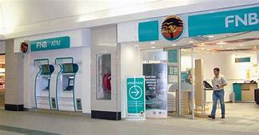

FIRST NATIONAL BANK
FNB First National Bank or FNB is a major bank in South Africa and considered one of the oldest with historical ties from 1838. It is a division within FirstRand Bank Limited, a subsidiary of FirstRand Limited, a South African integrated financial services group listed on the JSE (Johannesburg Stock Exchange). FNB provides personal, private, commercial and corporate banking services and products through telephone banking, internet banking, ATMs, mobile banking and EasyPlan branches. According to its 2012 Annual report it had 775 Branches and 4969 ATMs. FNB provides savings and investment products for its retail customers including savings accounts, notice deposit accounts, call deposit accounts, fixed rate deposit accounts and money market accounts.


WHERE TO FIND THIS STORE
FNB no: A144 is the second store next to KFC